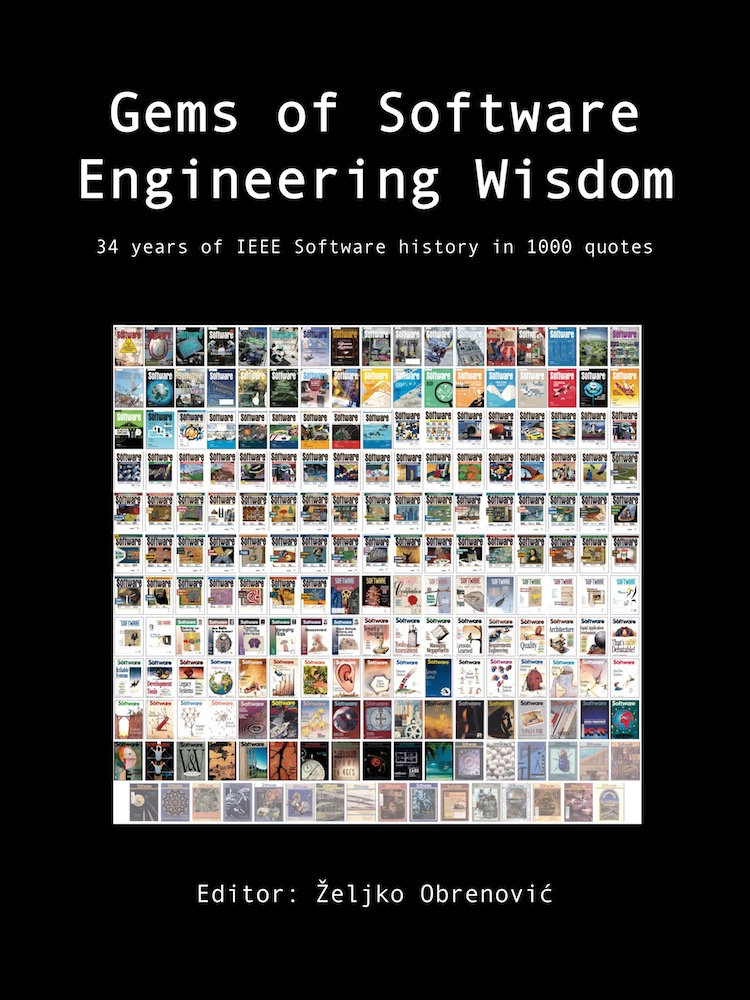

To Probe Further
Tools
KEY POINTS:
- I provide an overview of several tools I’ve built and use in daily architectural work..
Tools

|
Sokrates: Sokrates is a tool I built to implement my vision of documenting and analyzing software architectures of complex systems. Sokrates provides a pragmatic, inexpensive way to extract rich data from source code repositories. Sokrates can help you understand your code by making visible the size, complexity, and coupling of software and all people interactions and team topologies. | |
| Productivity Tools: a collection of online tools I built to help me in my daily work as an architect. I reuse these tools and lessons learned in building these tools when designing data pillar parts of the grounded architecture. | ||
|  | obren359.com: I've created a curated collections and high-quality IT resources (articles, videos, podcasts). |
To Probe Further ← Bookshelf |
To Probe Further Favorite Quotes → |